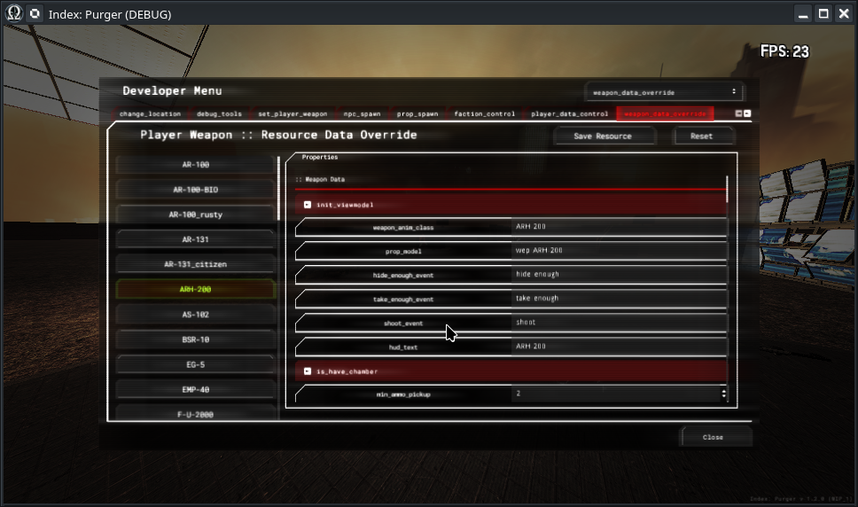

Module: dev_menu
Documentation last edited: October 23, 2025 at 14:33 UTC
Description
Меню разработчика, в котором есть тонна функций, которые ранее были только частью консольных команд. Помимо этого, предоставляет очень удобные инструменты для изменения конфигов оружия или NPC на лету, делая балансировку немного более лёгкой, чем когда-либо прежде. Но конечно же, внутри
"dev_menu_control.gd"
находится настоящий ад. Вся эта штука была написана за 12-часовой марафон без мысли о расширяемости. Это просто один, огромный, монолитный скрипт, который выглядит как ад, читается как ад и, по факту, является настоящим адом. Нет, это не значит, что я попытаюсь это изменить :)

Вкладки / Функциональность
change_location
- Список локаций, на которые ты можешь переключиться. Текущая локация подсвечена зелёным.
debug_tools
- Кучка инструментов отладки, которые ты можешь использовать. Большинство из них имеют понятные названия, так что у тебя не должно быть проблем с навигацией.
set_player_weapon
- Список всего оружия игрока, который также включает все медицинские/наркотические средства, потому что они технически являются оружием в этой игре.
npc_spawn
- Список всех классов NPC, которых ты потенциально можешь заспавнить с возможностью лёгкого изменения их конфига.
prop_spawn
- Список всех моделей
LocationProp
, которые ты можешь заспавнить.
faction_control
- Менеджер фракций, который позволяет тебе редактировать отношения между текущими существующими фракциями.
player_data_control
- Меню, которое позволяет тебе изменять определённые параметры игрока.
weapon_data_override
- Меню, которое позволяет тебе редактировать значения ЛЮБОГО оружия игрока, позволяя тебе временно переопределять его ради более быстрых проверок баланса. Пожалуйста, имей в виду,
если у тебя есть какое-либо оружие при себе - отредактированные значения не применятся к ним, ПОКА ты не выбросишь их и не поднимешь снова.
Нажатие кнопки "Save Resource" позволяет тебе сохранить отредактированные значения навсегда, иначе они будут сброшены после перезапуска игры.
npc_weapon_data_override
- То же, что и
weapon_data_override
, но для конфигов оружия NPC.
npc_data_override
- То же, что и
weapon_data_override
, но для конфигов данных персонажа NPC.
armor_data_override
- То же, что и
weapon_data_override
, но для конфигов брони игрока (которые являются предметами снаряжения).
perk_data_override
- То же, что и
weapon_data_override
, но для конфигов перков игрока.
music
- То же, что и... ничего на самом деле. Просто бумбокс в твоём меню, играющий музыку из этой игры. Содержит список всей музыки в этой игре.
location_sound
- Список всех доступных звуков локаций.
voicelines
- Список всех доступных голосовых линий.
soundscape
- Список всех доступных звуковых ландшафтов. Будь осторожен, если ты переключишь звуковой ландшафт через это меню - он переопределит его, и узлы звуковых ландшафтов не будут применять свои значения, пока ты не нажмёшь "Stop Soundscape".
difficulty
- Меню редактора для изменения значений сложности для лучшего контроля балансировки.
environment
- Меню редактирования окружения, которое позволяет тебе изменять параметры текущего
Environment
в реальном времени. Работает лучше всего с локациями, которые не используют lightmaps, потому что изменения можно заметить сразу же.
color_grading
- Список всех доступных LUTs цветокоррекции, на которые ты можешь переключиться.
achievements
- Список всех достижений в этой игре, которые ты можешь блокировать/разблокировать в зависимости от статуса checkboxes.
loadout_item_unlock
- Список всех предметов снаряжения, которые ты можешь блокировать/разблокировать в зависимости от статуса checkboxes.
values
- Список всех глобальных значений
Values
, которые ты можешь просматривать/редактировать по своему желанию.
globals
- Список всех глобальных значений
Globals
, которые ты можешь просматривать/редактировать по своему желанию.
loadout_selection
- Меню выбора снаряжения, которое позволяет тебе выбрать любой предмет снаряжения и назначить его себе
Способы добавить свои собственные штуки
Итак, ты решил добавить что-то в эту штуку. О боже, о бедная душа... Какие ужасы тебе предстоит увидеть... В любом случае, есть варианты. Тебе практически нужны две вещи:
1.
"res://modules/dev_menu/src/ui/dev_menu_control.gd"
- Открой этот ужасный скрипт
2.
"res://modules/dev_menu/assets/ui_scenes/dev_menu.tscn"
- Открой эту сцену
Отсюда у тебя есть несколько вариантов:
- Добавление своего собственного инструмента отладки:
1. Найди узел
"tabs/debug_tools/scroll/vbox"
2. Там есть несколько сеток, которые относятся к разным категориям, выбери свой яд и создай новую кнопку в одной.
3. Создай новую функцию в
"dev_menu_control.gd"
. Если твоя кнопка называется
be_happy
, тогда тебе нужно назвать свою функцию
func debug_be_happy():
, таким образом dev-menu automatically назначит сигнал на эту функцию, и она будет работать
- Добавление своей собственной вкладки:
Здесь не так много магии, честно. Все вкладки - это просто узлы
Control
, которые являются дочерними к узлу
"tabs"
. Это просто простая, тупая работа с UI элементами Godot. Помести свои функции куда угодно, просто приклей их скотчем. Ты можешь поместить все свои вызовы функций инициализации в функцию
initialize()
General Information
Root directories list
assets, docs, src
Nodes
Classes
None
Resources
None
Other Scripts
None